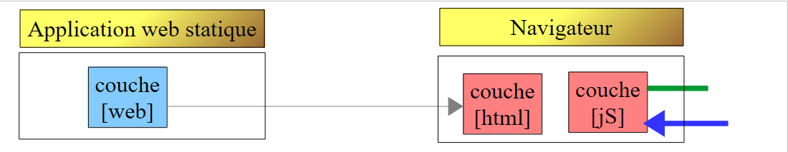
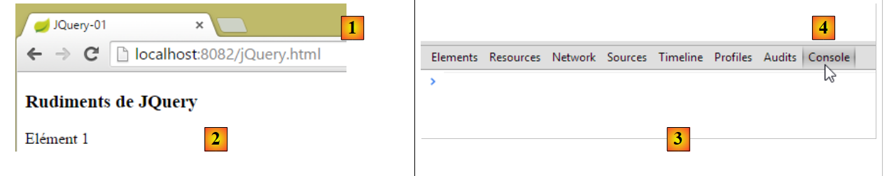
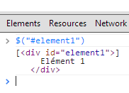
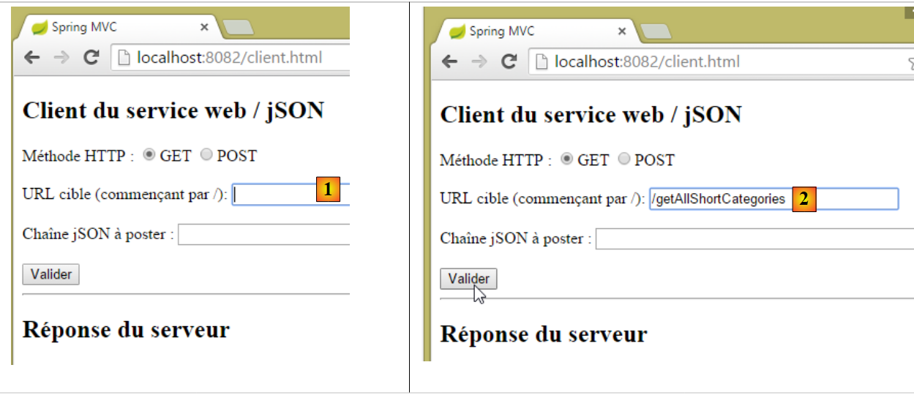
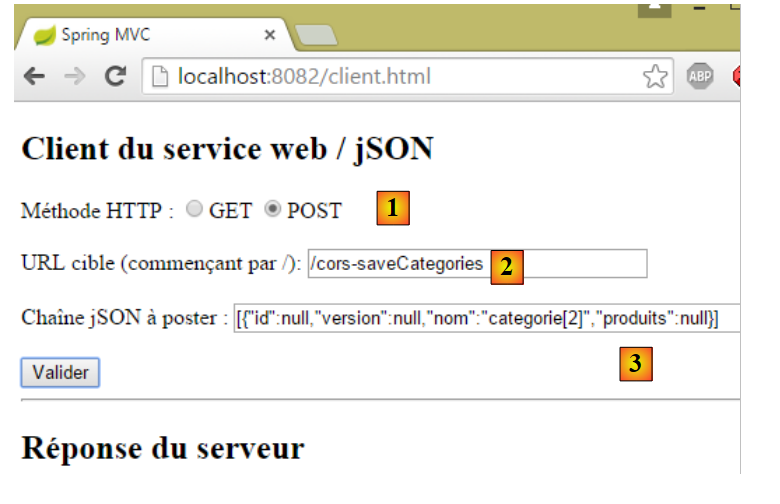
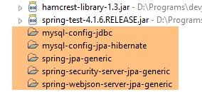
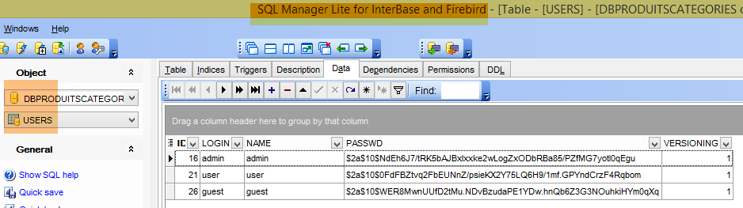
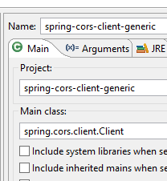

21. Gestion des accès inter-domaines
21.1. Architecture
Nous allons examiner maintenant le problème des requêtes inter-domaines. Dans le document [Tutoriel AngularJS / Spring 4], on développe une application client / serveur où le client est une application AngularJS :
 |
- les pages HTML / CSS / JS de l'application Angular viennent du serveur [1] ;
- en [2], le service [dao] fait une requête à un autre serveur, le serveur [2]. Et bien ça, c'est interdit par le navigateur qui exécute l'application Angular parce que c'est une faille de sécurité. L'application ne peut interroger que le serveur d'où elle vient, ç-à-d le serveur [1] ;
En fait, il est inexact de dire que le navigateur interdit à l'application Angular d'interroger le serveur [2]. Le navigateur interroge en fait le serveur [2] pour savoir s'il autorise un client qui ne vient pas de chez lui à l'interroger. On appelle cette technique de partage, le CORS (Cross-Origin Resource Sharing). Le serveur [2] donne son accord en envoyant des entêtes HTTP précis.
Pour montrer les problèmes que l'on peut rencontrer, nous allons créer une application client / serveur où :
- le serveur sera notre serveur web / jSON sécurisé ;
- le client sera une simple page HTML équipée d'un code Javascript qui fera des requêtes au serveur web / jSON ;
Nous allons mettre en place l'architecture suivante :
 |
- en [1], une application web délivre des pages HTML / jS ;
- en [2], le navigateur exécute le Javascript embarqué dans les pages HTML pour interroger le service web sécurisé [3] ;
21.2. Le projet [spring-cors-server-jdbc-generic]
21.2.1. Mise en place de l'environnement de travail
 |
- chargez les projets ci-dessus. Les projets [spring-cors-*] seront trouvés dans le dossier [<exemples>\spring-database-generic\spring-cors] ;
- faites Alt-F5 et régénérez tous les projets Maven ;
Exécutez ensuite la configuration d'exécution nommée [spring-cors-server-jdbc-generic] (le SGBD MySQL doit être lancé) qui lance un service web sur le port 8081 :
 |
Remplissez la base [dbproduitscategories] avec la configuration d'exécution nommée [spring-jdbc-generic-04-fillDataBase] :
 |
Exécutez la configuration d'exécution nommée [spring-cors-client-generic] qui lance une deuxième application web (sur un autre Tomcat) sur le port 8082 :
 |
Avec un navigateur, demandez l'URL [http://localhost:8082/client.html] :
 |
- en [1], on demande la version courte de toutes les catégories ;
- en [2], la réponse jSON du serveur ;
21.2.2. Le projet du client [spring-cors-client-generic]
 |
 |
Le fichier [application.properties] nous permet de fixer le port de l'application web client. Son contenu est le suivant :
server.port=8082
Ainsi :
- le client est une application web disponible à l'URL [http://localhost:8082];
- le serveur est une application web disponible à l'URL [http://localhost:8081];
Parce que le client n'est pas obtenu à partir du même port que le serveur, le problème des requêtes inter-domaines surgit. En effet, [http://localhost:8081] et [http://localhost:8082] sont deux domaines différents.
21.2.3. Configuration Maven
Le projet est un projet Maven avec le fichier [pom.xml] suivant :
<?xml version="1.0" encoding="UTF-8"?>
<project xmlns="http://maven.apache.org/POM/4.0.0" xmlns:xsi="http://www.w3.org/2001/XMLSchema-instance"
xsi:schemaLocation="http://maven.apache.org/POM/4.0.0 http://maven.apache.org/xsd/maven-4.0.0.xsd">
<modelVersion>4.0.0</modelVersion>
<groupId>dvp.spring.database</groupId>
<artifactId>spring-cors-client-generic</artifactId>
<version>0.0.1-SNAPSHOT</version>
<packaging>jar</packaging>
<name>spring-cors-client-generic</name>
<description>Client cors for webjson server</description>
<parent>
<groupId>org.springframework.boot</groupId>
<artifactId>spring-boot-starter-parent</artifactId>
<version>1.2.3.RELEASE</version>
<relativePath /> <!-- lookup parent from repository -->
</parent>
<properties>
<project.build.sourceEncoding>UTF-8</project.build.sourceEncoding>
<java.version>1.7</java.version>
</properties>
<dependencies>
<dependency>
<groupId>org.springframework.boot</groupId>
<artifactId>spring-boot-starter-web</artifactId>
</dependency>
</dependencies>
<!-- plugins -->
<build>
<plugins>
<plugin>
<groupId>org.springframework.boot</groupId>
<artifactId>spring-boot-maven-plugin</artifactId>
</plugin>
<plugin>
<artifactId>maven-assembly-plugin</artifactId>
<configuration>
<descriptorRefs>
<descriptorRef>jar-with-dependencies</descriptorRef>
</descriptorRefs>
</configuration>
</plugin>
<plugin>
<groupId>org.apache.maven.plugins</groupId>
<artifactId>maven-surefire-plugin</artifactId>
<version>2.18.1</version>
</plugin>
</plugins>
</build>
</project>
- lignes 14-19 : c'est un projet Spring Boot ;
- lignes 27-30 : on utilise la dépendance [spring-boot-starter-web] qui amène avec elle un serveur Tomcat et Spring MVC ;
21.2.4. Rudiments de jQuery et de Javascript
 |
L'application web délivre l'unique page suivante :
 |
Elle embarque avec elle du code Javascript (jS) exécuté dans le navigateur. Nous allons présenter quelques rudiments de Javascript qui vont nous permettre de comprendre le code. Le client va faire des appels HTTP à l'aide de la bibliothèque jQuery [https://jquery.com/] qui apporte de nombreuses fonctions facilitant le développement Javascript. Nous créons un fichier statique HTML [jQuery.html] que l'on place dans le dossier [static] :
 |
Ce fichier aura le contenu suivant :
<!DOCTYPE html>
<html xmlns="http://www.w3.org/1999/xhtml">
<head>
<meta http-equiv="Content-Type" content="text/html; charset=utf-8" />
<title>JQuery-01</title>
<script type="text/javascript" src="/js/jquery-2.1.3.min.js"></script>
</head>
<body>
<h3>Rudiments de JQuery</h3>
<div id="element1">
Elément 1
</div>
</body>
</html>
- ligne 6 : importation de jQuery ;
- lignes 10-12 : un élément de la page d'id [element1]. Nous allons jouer avec cet élément.
Il nous faut télécharger le fichier [jquery-2.1.3.min.js]. On le trouvera la dernière version de jQuery à l'URL [http://jquery.com/download/] :

On placera le fichier téléchargé dans le dossier [static / js] :
|
Ceci fait, on demande la vue statique [jQuery.html] avec Chrome [1-2] :
 |
Avec Google Chrome, faire [Ctrl-Maj-I] pour faire apparaître les outils de développement [3]. L'onglet [Console] [4] permet d'exécuter du code Javascript. Nous donnons dans ce qui suit des commandes Javascript à taper et nous en donnons une explication.
: rend la collection de tous les éléments d'id [element1], donc normalement une collection de 0 ou 1 élément parce qu'on ne peut avoir deux id identiques dans une page HTML. |  |
: affecte le texte [blabla] à tous les éléments de la collection. Ceci a pour effet de changer le contenu affiché par la page |   |
cache les éléments de la collection. Le texte [blabla] n'est plus affiché. |   |
: affiche de nouveau la collection. Cela nous permet de voir que l'élément d'id [element1] a l'attribut CSS style='display : none;' qui fait que l'élément est caché. |  |
: affiche les éléments de la collection. Le texte [blabla] apparaît de nouveau. C'est l'attribut CSS style='display : block;' qui assure cet affichage. |   |
: fixe un attribut à tous les éléments de la collection. L'attribut est ici [style] et sa valeur [color: red]. Le texte [blabla] passe en rouge. |   |
 | |
 |
On notera que l'URL du navigateur n'a pas changé pendant toutes ces manipulations. Il n'y a pas eu d'échanges avec le serveur web. Tout se passe à l'intérieur du navigateur. Maintenant, visualisons le code source de la page :
<!DOCTYPE html>
<html xmlns="http://www.w3.org/1999/xhtml">
<head>
<meta http-equiv="Content-Type" content="text/html; charset=utf-8" />
<title>JQuery-01</title>
<script type="text/javascript" src="/js/jquery-1.11.1.min.js"></script>
</head>
<body>
<h3>Rudiments de JQuery</h3>
<div id="element1">
Elément 1
</div>
</body>
</html>
C'est le texte initial. Il ne reflète en rien les manipulations que l'on a faites sur l'élément des lignes 10-12. Il est important de s'en souvenir lorsqu'on fait du débogage Javascript. Il est alors souvent inutile de visualiser le code source de la page affichée.
21.2.5. Le code jS de l'application
Revenons au code HTML de la page de l'application cliente qui va interroger le service web / jSON :
|
<!DOCTYPE html>
<html>
<head>
<meta charset="UTF-8">
<title>Spring MVC</title>
<script type="text/javascript" src="/js/jquery-2.1.1.min.js"></script>
<script type="text/javascript" src="/js/client.js"></script>
</head>
<body>
<h2>Client du service web / jSON</h2>
<form id="formulaire">
<!-- méthode HTTP -->
Méthode HTTP :
<!-- -->
<input type="radio" id="get" name="method" value="get" checked="checked" />GET
<!-- -->
<input type="radio" id="post" name="method" value="post" />POST
<!-- URL -->
<br /> <br />URL cible : <input type="text" id="url" size="30"><br />
<!-- valeur postée -->
<br /> Chaîne jSON à poster : <input type="text" id="posted" size="50" />
<!-- bouton de validation -->
<br /> <br /> <input type="submit" value="Valider" onclick="javascript:requestServer(); return false;"></input>
</form>
<hr />
<h2>Réponse du serveur</h2>
<div id="response"></div>
</body>
</html>
- ligne 6 : on importe la bibliothèque jQuery ;
- ligne 7 : on importe un code que nous allons écrire ;
- lignes 11, 15, 17, 21 : on notera les identifiants [id] des composants de la page. Le javascript référence ces composants via ces identifiants ;
Le code [client.js] est le suivant :
// données globales
var url;
var posted;
var response;
var method;
function requestServer() {
// on récupère les informations du formulaire
var urlValue = url.val();
var postedValue = posted.val();
method = document.forms[0].elements['method'].value;
// on fait un appel Ajax à la main
if (method === "get") {
doGet(urlValue);
} else {
doPost(urlValue, postedValue);
}
}
function doGet(url) {
// on fait un appel Ajax à la main
$.ajax({
headers : {
'Authorization' : 'Basic YWRtaW46YWRtaW4='
},
url : 'http://localhost:8081' + url,
type : 'GET',
dataType : 'tex/plain',
beforeSend : function() {
},
success : function(data) {
// résultat texte
response.text(data);
},
complete : function() {
},
error : function(jqXHR) {
// erreur système
response.text(jqXHR.responseText);
}
})
}
function doPost(url, posted) {
// on fait un appel Ajax à la main
$.ajax({
headers : {
'Authorization' : 'Basic YWRtaW46YWRtaW4='
},
url : 'http://localhost:8081 ' + url,
type : 'POST',
contentType : 'application/json',
data : posted,
dataType : 'tex/plain',
beforeSend : function() {
},
success : function(data) {
// résultat texte
response.text(data);
},
complete : function() {
},
error : function(jqXHR) {
// erreur système
response.text(jqXHR.responseText);
}
})
}
// au chargement du document
$(document).ready(function() {
// on récupère les références des composants de la page
url = $("#url");
posted = $("#posted");
response = $("#response");
});
- lignes 71-75 : du code jS exécuté à la fin du chargement du document dans le navigateur ;
- lignes 73-75 : on récupère les références de trois des zones du document HTML ;
- lignes 2-5 : des variables globales connues dans toute les fonctions définies dans le fichier jS ;
- ligne 9 : on récupère l'URL tapée par l'utilisateur ;
- ligne 10 : on récupère la valeur qu'il veut poster ;
-
ligne 11 : on récupère la façon [get] ou [post] à utiliser pour demander l'URL de la ligne 9 :
- document désigne le document chargé par le navigateur, ce qu'on appelle le DOM (Document Object Model),
- document.forms[0] désigne le 1er formulaire du document, un document pouvant en avoir plusieurs. Ici, il n'y en qu'un,
- document.forms[0].elements['method'] désigne l'élément du formulaire qui a l'attribut [name='method']. Il y en a deux :
<input type="radio" id="get" name="method" value="get" checked="checked" />GET <input type="radio" id="post" name="method" value="post" />POST -
(suite)
- document.forms[0].elements['method'].value est la valeur qui va être postée pour le composant qui a l'attribut [name='method']. On sait que la valeur postée est la valeur de l'attribut [value] du bouton radio coché. Ici, ce sera donc l'une des chaînes ['get', 'post'] ;
- lignes 13-18 : selon la méthode HTTP à utiliser, on exécute la méthode [doGet] ou [doPost] ;
- la méthode jQuery [$.ajax] effectue un appel HTTP ;
- lignes 23-25 : on s'adresse à un serveur qui exige un entête HTTP [Authorization: Basic code]. Nous créons cette entête pour l'utilisateur [admin / admin] qui est le seul à pouvoir interroger le serveur ;
- ligne 26 : l'utilisateur saisira des URL du type [/getAllLongCategories, /saveCategories, ...]. Il faut donc compléter ces URL ;
- ligne 27 : méthode HTTP à utiliser ;
- ligne 28 : le serveur renvoie du jSON. On indique le type [text/plain] comme type de résultat afin de l'afficher tel qu'il a été reçu ;
- ligne 33 : affichage de la réponse texte du serveur ;
- ligne 39 : affichage du message d'erreur éventuel au format texte ;
- ligne 44 : la méthode [doPost] reçoit un second paramètre qui est la valeur à poster ;
- ligne 52 : pour indiquer que la valeur postée va l'être sous la forme d'une chaîne jSON ;
21.2.6. Exécution du client
L'application cliente est une application console lancée par la classe exécutable [Client] suivante :
 |
package spring.cors.client;
import org.springframework.boot.SpringApplication;
import org.springframework.boot.autoconfigure.EnableAutoConfiguration;
@EnableAutoConfiguration
public class Client {
public static void main(String[] args) {
SpringApplication.run(Client.class, args);
}
}
- ligne 6 : l'annotation [@EnableAutoConfiguration] est une annotation du projet [Spring Boot] (ligne 4). Spring Boot va inspecter les archives présentes dans le Classpath du projet. Ce seront ici toutes les dépendances Maven amenées par la dépendance unique du fichier [pom.xml] :
<dependencies>
<dependency>
<groupId>org.springframework.boot</groupId>
<artifactId>spring-boot-starter-web</artifactId>
</dependency>
</dependencies>
Cette dépendance amène de très nombreuses archives, notamment Spring MVC et un serveur Tomcat. A cause de la présence de ces dépendances, Spring Boot va configurer, avec des valeurs par défaut, un projet Spring MVC s'exécutant sur Tomcat. Le serveur Tomcat est alors configuré pour travailler sur le port 8080. S'il on veut s'affranchir des valeurs par défaut choisies par Spring Boot, on peut utiliser le fichier [application.properties] à la racine du Classpath (tout ce qui est dans [src / main / resources] est à la racine du Classpath) :
 |
Nous indiquons que le serveur Tomcat doit travailler sur le port 8082 de la façon suivante :
server.port=8082
On trouvera la liste des paramètres utilisables dans [application.properties] à l'URL (juin 2015) [http://docs.spring.io/spring-boot/docs/current/reference/html/common-application-properties.html] ;
Retour au code de [Client.java] :
- ligne 10 : la méthode [SpringApplication.run] va déployer la page [client.html] sur le serveur Tomcat présent dans le Classpath du projet ;
21.2.7. L'URL [/getAllShortCategories]
 |
Nous lançons :
- le serveur web / json sécurisé sur le port 8081 (configuration [spring-security-server-jdbc-generic]) ;
- le client de ce serveur sur le port 8082 (configuration [spring-cors-client-generic]) ;
puis nous demandons l'URL [http://localhost:8082/client.html] [1] :
 |
- en [2], nous faisons un GET sur l'URL [http://localhost:8081/getAllShortCategories];
Nous n'obtenons pas de réponse du serveur. Lorsqu'on regarde la console de développement de Chrome (Ctrl-Maj-I) on découvre une erreur :
 |
- en [1], on est dans l'onglet [Network] ;
- en [2], on voit que la requête HTTP qui a été faite n'est pas [GET] mais [OPTIONS]. Dans le cas d'une requête inter-domaines, le navigateur vérifie auprès du serveur qu'un certain nombre de conditions sont vérifiées en lui envoyant une requête HTTP [OPTIONS]. En l'occurrence, les requêtes sont celles pointées par les pastilles [5-6] ;
- en [5], le navigateur demande si l'URL cible peut être atteinte avec un GET. La requête [Access-Control-Request-Method] demande une réponse avec un entête HTTP [Access-Control-Allow-Methods] indiquant que la méthode demandée est acceptée ;
- en [6], le navigateur envoie l'entête HTTP [Origin: http://localhost:8081]. Cet entête demande une réponse dans un entête HTTP [Access-Control-Allow-Origin] indiquant que l'origine indiquée est acceptée ;
- en [7], le navigateur demande si les entêtes HTTP [accept] et [authorization] sont acceptés. La requête [Access-Control-Request-Headers] attend une réponse avec un entête HTTP [Access-Control-Allow-Headers] indiquant que les entêtes demandés sont acceptés ;
- on a une erreur en [3]. En cliquant sur l'icône, on a l'erreur [4] ;
- en [4], le message indique que le serveur n'a pas envoyé l'entête HTTP [Access-Control-Allow-Origin] qui indique si l'origine de la requête est acceptée ;
- en [8], on peut constater que le serveur n'a effectivement pas envoyé cet entête. Du coup le navigateur a refusé de faire la requête HTTP GET demandée initialement ;
Il nous faut modifier le serveur web / jSON.
21.2.8. Un nouveau service web / json
Nous créons un nouveau projet Maven [spring-cors-server-jdbc-generic] :
 |
La configuration Maven du nouveau service web est la suivante :
<project xmlns="http://maven.apache.org/POM/4.0.0" xmlns:xsi="http://www.w3.org/2001/XMLSchema-instance"
xsi:schemaLocation="http://maven.apache.org/POM/4.0.0 http://maven.apache.org/xsd/maven-4.0.0.xsd">
<modelVersion>4.0.0</modelVersion>
<groupId>dvp.spring.database</groupId>
<artifactId>spring-cors-server-jdbc-generic</artifactId>
<version>0.0.1-SNAPSHOT</version>
<name>spring-cors-server-jdbc-generic</name>
<description>démo spring cors</description>
<parent>
<groupId>org.springframework.boot</groupId>
<artifactId>spring-boot-starter-parent</artifactId>
<version>1.2.3.RELEASE</version>
</parent>
<!-- plugins -->
<build>
<plugins>
<plugin>
<groupId>org.apache.maven.plugins</groupId>
<artifactId>maven-surefire-plugin</artifactId>
<version>2.18.1</version>
</plugin>
</plugins>
</build>
<dependencies>
<dependency>
<groupId>dvp.spring.database</groupId>
<artifactId>spring-security-server-jdbc-generic</artifactId>
<version>0.0.1-SNAPSHOT</version>
</dependency>
</dependencies>
</project>
- lignes 30-32 : nous récupérons tout l'acquis du travail fait jusqu'à maintenant en nous appuyant sur l'archive du serveur web / json sécurisé ;
Au final, les dépendances sont les suivantes :
 |
La classe de configuration [AppConfig] est la suivante :
 |
package spring.cors.server.config;
import javax.annotation.PostConstruct;
import org.springframework.beans.factory.annotation.Autowired;
import org.springframework.context.annotation.Bean;
import org.springframework.context.annotation.ComponentScan;
import org.springframework.context.annotation.Configuration;
import org.springframework.context.annotation.Import;
import org.springframework.web.servlet.DispatcherServlet;
@Configuration
@ComponentScan(basePackages = { "spring.cors.server.service" })
@Import({ spring.security.config.AppConfig.class })
public class AppConfig {
// requêtes inter-domaines
@Bean
public boolean isCorsEnabled() {
return true;
}
...
}
- ligne 12 : la classe est une classe de configuration Spring ;
- ligne 9 : d'autres composants Spring sont à chercher dans le paquetage [spring.cors.server.service] ;
- ligne 14 : on importe les beans du projet [spring-security-server-jdbc-generic] ;
- lignes 18-21 : nous créons un composant Spring nommé [isCorsEnabled] qui indique si on accepte ou non les clients étrangers au domaine du serveur ;
21.2.9. Les contrôleurs
Le nouveau service web a quatre contrôleurs :
 |
- [CorsCategorieController] gère les URL de traitement des catégories. Il ne gère que les en-têtes CORS des clients web. Sinon, il délègue le travail au contrôleur [CategorieController] de la dépendance [spring-webjson-server-jdbc-generic] ;
- [CorsProduitController] et [CorsAuthenticateController] font de même en déléguant le travail aux contrôleurs [ProduitController] de la dépendance [spring-webjson-server-jdbc-generic] et [AuthenticateController] de la dépendance [spring-security-server-jdbc-generic] ;
- [CorsController] sert à factoriser ce qui est commun aux trois contrôleurs précédents ;
21.2.9.1. Le contrôleur [CorsController]
La classe [CorsController] est la suivante :
package spring.cors.server.service;
import javax.servlet.http.HttpServletResponse;
import org.springframework.beans.factory.annotation.Autowired;
import org.springframework.stereotype.Component;
@Component
public class CorsController {
@Autowired
private boolean isCorsEnabled;
// envoi des options au client
public void sendOptions(String origin, HttpServletResponse response) {
// Cors allowed ?
if (!isCorsEnabled || origin == null || !origin.startsWith("http://localhost")) {
return;
}
// on fixe le header CORS
response.addHeader("Access-Control-Allow-Origin", origin);
// on autorise certains headers
response.addHeader("Access-Control-Allow-Headers", "accept, authorization");
// on autorise le GET
response.addHeader("Access-Control-Allow-Methods", "GET");
}
}
- ligne 8 : la classe [CorsController] est un contrôleur Spring ;
- lignes 11-12 : injection du bean [isCorsEnabled] qui indique s'il faut gérer ou non les headers CORS ;
- lignes 15-26 : la méthode [sendOptions] s'occupe de répondre aux clients qui envoient des headers CORS ;
- lignes 17-19 : si l'application est configurée pour accepter les requêtes inter-domaines et si l'émetteur a envoyé l'entête HTTP [Origin] et si cette origine commence par [http://localhost], alors on va accepter la requête inter-domaines, sinon on la rejette ;
- ligne 21 : si le client est dans le domaine [http://localhost:port], on envoie l'entête HTTP :
Access-Control-Allow-Origin: http://localhost:port
qui signifie que le serveur accepte l'origine du client ;
- lignes 22-25 : nous avons signalé deux entêtes HTTP particuliers dans la requête HTTP [OPTIONS] :
A l'entête HTTP [Access-Control-Request-X], le serveur répond avec un entête HTTP [Access-Control-Allow-X] dans lequel il indique ce qui est autorisé. Les lignes 22-25 se contentent de reprendre la demande du client pour indiquer qu'elle est acceptée ;
21.2.9.2. Le contrôleur [CorsCategorieController]
package spring.cors.server.service;
import java.util.List;
import javax.servlet.http.HttpServletRequest;
import javax.servlet.http.HttpServletResponse;
import org.springframework.beans.factory.annotation.Autowired;
import org.springframework.web.bind.annotation.RequestHeader;
import org.springframework.web.bind.annotation.RequestMapping;
import org.springframework.web.bind.annotation.RequestMethod;
import org.springframework.web.bind.annotation.RestController;
import spring.jdbc.entities.Categorie;
import spring.webjson.server.entities.CoreCategorie;
import spring.webjson.server.service.CategorieController;
import spring.webjson.server.service.Response;
@RestController
public class CorsCategorieController extends CorsController {
@Autowired
private CategorieController categorieController;
@RequestMapping(value = "/cors-getAllShortCategories", method = RequestMethod.OPTIONS)
public void corsGetAllShortCategories(@RequestHeader(value = "Origin", required = false) String origin,
HttpServletResponse response) {
sendOptions(origin, response);
}
@RequestMapping(value = "/cors-getAllShortCategories", method = RequestMethod.GET)
public Response<List<Categorie>> getAllShortCategories(
@RequestHeader(value = "Origin", required = false) String origin, HttpServletResponse response) {
// méthode d'origine
return categorieController.getAllShortCategories();
}
...
}
- ligne 19 : l'annotation [@RestController] fait de la classe à la fois un composant Spring et un contrôleur MVC qui envoie mui-même ses réponses au client ;
- ligne 20 : la classe [CorsCategorieController] étend la classe [CorsController] que nous venons de voir ;
- lignes 22-23 : injection du contrôleur [CategorieController categorieController] de la dépendance [spring-webjson-server-jdbc-generic] ;
- lignes 25-29 : traitent l'URL [/cors-getAllShortCategories] lorsqu'elle est demandée avec la commande HTTP [OPTIONS]. Par convention, nous décidons que les clients web qui veulent appeler l'URL [/U] du service web sécurisé, devront appeler en fait l'URL [/cors-U]. Le service web déployé aura ainsi deux types d'URL :
- [/U] : pour des clients non web ;
- [/cors-U] : pour les clients web ;
- ligne 25 : la méthode [/cors-getAllShortCategories] admet pour paramètres :
- l'objet [@RequestHeader(value = "Origin", required = false)] qui va récupérer l'entête HTTP [Origin] de la requête. Cet entête a été envoyé par l'émetteur de la requête :
On indique que l'entête HTTP [Origin] est facultatif [required = false]. Dans ce cas, si l'entête est absent, le paramètre [String origin] aura la valeur null. Avec [required = true], qui est la valeur par défaut, une exception est lancée si l'entête est absent. On a voulu éviter ce cas ;
- (suite)
- l'objet [HttpServletResponse response] qui va être renvoyé au client qui a fait la demande ;
Ces deux paramètres sont injectés par Spring ;
- ligne 28 : on délègue le traitement de la demande à la méthode [sendOptions] de la classe parent [CorsController] ;
- lignes 31-36 : la méthode [getAllShortCategories] traite l'URL [/cors-getAllShortCategories] lorsqu'elle est demandée avec un GET ;
- ligne 35 : le travail est délégué à la méthode [CategorieController.getAllShortCategories] de la dépendance [spring-webjson-server-jdbc-generic] ;
Nous sommes désormais prêts pour de nouveaux tests. Nous lançons la nouvelle version du service web et nous découvrons que le problème reste entier. Rien n'a changé. Si ligne 28 ci-dessus, on met un affichage console, celui-ci n'est jamais affiché montrant par là que la méthode [corsGetAllShortCategories] de la ligne 25 n'est jamais appelée.
Après quelques recherches, on découvre que Spring MVC traite lui-même les commandes HTTP [OPTIONS] avec un traitement par défaut. Aussi c'est toujours Spring qui répond et jamais la méthode [corsGetAllShortCategories] de la ligne 25. Ce comportement par défaut de Spring MVC peut être changé. Nous modifions la classe [AppConfig] existante :
|
package spring.cors.server.config;
import javax.annotation.PostConstruct;
import org.springframework.beans.factory.annotation.Autowired;
import org.springframework.context.annotation.Bean;
import org.springframework.context.annotation.ComponentScan;
import org.springframework.context.annotation.Configuration;
import org.springframework.context.annotation.Import;
import org.springframework.web.servlet.DispatcherServlet;
@Configuration
@ComponentScan(basePackages = { "spring.cors.server.service" })
@Import({ spring.security.config.AppConfig.class })
public class AppConfig {
// requêtes inter-domaines
@Bean
public boolean isCorsEnabled() {
return true;
}
@Autowired
private DispatcherServlet dispatcherServlet;
@PostConstruct
public void init(){
// l'application traite elle-même les demandes HTTP [OPTIONS]
dispatcherServlet.setDispatchOptionsRequest(true);
}
}
- lignes 23-24 : on injecte le composant [DispatcherServlet dispatcherServlet] qui a été défini dans la dépendance [spring-webjson-server-jdbc-generic] ;
- lignes 26-30 : l'annotation [@PostConstruct] fait que la méthode [init] sera exécutée après instanciation de la classe [AppConfig] et après les injections faites par Spring ;
- ligne 29 : on demande à ce que la servlet fasse suivre à l'application les commandes HTTP [OPTIONS] ;
Nous refaisons les tests avec cette nouvelle configuration. On obtient le résultat suivant :
 |
- en [1], nous voyons qu'il y a deux requêtes HTTP vers l'URL [http://localhost:8080/getAllCategories];
- en [2], la requête [OPTIONS] ;
- en [3], les trois entêtes HTTP que nous venons de configurer dans la réponse du serveur ;
Examinons maintenant la seconde requête :
 |
- en [1], la requête examinée ;
- en [2], c'est la requête GET. Grâce à la première requête [OPTIONS], le navigateur a reçu les informations qu'il demandait. Il réalise maintenant la requête [GET] demandée initialement ;
- en [3], la réponse du serveur ;
- en [4], le serveur envoie du jSON ;
- en [5], une erreur s'est produite ;
- en [6], le message d'erreur ;
Il est plus difficile d'expliquer ce qui s'est passé ici. La réponse [3] du serveur est normale [HTTP/1.1 200 OK]. On devrait donc avoir le document demandé. Il est possible que le serveur ait bien envoyé le document mais que c'est le navigateur qui empêche son utilisation parce qu'il veut que pour la requête GET également, la réponse comporte l'entête HTTP [Access-Control-Allow-Origin:http://localhost:8081].
Nous modifions la méthode qui traite le GET de l'URL [/cors-getAllShortCategories] :
@RequestMapping(value = "/cors-getAllShortCategories", method = RequestMethod.GET)
public Response<List<Categorie>> getAllShortCategories(
@RequestHeader(value = "Origin", required = false) String origin, HttpServletResponse response) {
// entêtes CORS
sendOptions(origin, response);
// méthode d'origine
return categorieController.getAllShortCategories();
}
- ligne 5 : comme pour la demande HTTP [OPTIONS], le serveur va envoyer les entêtes HTTP CORS pour une demande HTTP [GET] ;
Après cette modification, les résultats sont les suivants :
 |
Nous avons bien obtenu la version courte de toutes les catégories.
21.2.9.3. Les URL [GET]
Dans les contrôleurs [CorsCategorieController, CorsProduitController, CorsAuthenticateController], le code des actions qui traitent les URL demandées avec un [GET] suit le modèle des actions qui ont traité précédemment l'URL [/cors-getAllShortArticles]. Le lecteur peut vérifier le code dans les exemples livrés avec ce document. Voici un exemple pour l'URL [/cors-getAllLongProduits] du contrôleur [CorsProduitController] :
package spring.cors.server.service;
import java.util.List;
import javax.servlet.http.HttpServletRequest;
import javax.servlet.http.HttpServletResponse;
import org.springframework.beans.factory.annotation.Autowired;
import org.springframework.web.bind.annotation.RequestHeader;
import org.springframework.web.bind.annotation.RequestMapping;
import org.springframework.web.bind.annotation.RequestMethod;
import org.springframework.web.bind.annotation.RestController;
import spring.jdbc.entities.Produit;
import spring.webjson.server.entities.CoreProduit;
import spring.webjson.server.service.ProduitController;
import spring.webjson.server.service.Response;
@RestController
public class CorsProduitController extends CorsController {
@Autowired
private ProduitController produitController;
@RequestMapping(value = "/cors-getAllLongProduits", method = RequestMethod.GET)
public Response<List<Produit>> getAllLongProduits(@RequestHeader(value = "Origin", required = false) String origin,HttpServletResponse response) {
// entêtes CORS
sendOptions(origin, response);
// méthode d'origine
return produitController.getAllLongProduits();
}
@RequestMapping(value = "/cors-getAllLongProduits", method = RequestMethod.OPTIONS)
public void corsGetAllLongProduits(@RequestHeader(value = "Origin", required = false) String origin,
HttpServletResponse response) {
sendOptions(origin, response);
}
...
}
 |
21.2.9.4. Les URL [POST]
Examinons le cas suivant :
 |
- on fait un POST [1] vers l'URL [2] ;
- en [3], la valeur postée. Il s'agit de la chaîne jSON d'une catégorie sans produits ;
- au final, on cherche à créer une catégorie appelée [categorie[2]] ;
Nous ne modifions pour l'instant aucun code. Le résultat obtenu est alors le suivant :
 |
- en [1], comme pour les requêtes [GET], une requête [OPTIONS] est faite par le navigateur ;
- en [2], il demande une autorisation d'accès pour une requête [POST]. Auparavant c'était [GET] ;
- en [3], il demande une autorisation d'envoyer les entêtes HTTP [accept, authorization, content-type]. Auparavant, on avait seulement les deux premiers entêtes ;
- en [4], le service web ne donne pas toutes les autorisations demandées ce qui provoque l'erreur [5] ;
Nous modifions la méthode [CorsController.sendOptions] de la façon suivante :
public void sendOptions(String origin, HttpServletResponse response) {
// Cors allowed ?
if (!isCorsEnabled || origin == null || !origin.startsWith("http://localhost")) {
return;
}
// on fixe le header CORS
response.addHeader("Access-Control-Allow-Origin", origin);
// on autorise certains headers
response.addHeader("Access-Control-Allow-Headers", "accept, authorization, content-type");
// on autorise le GET et le POST
response.addHeader("Access-Control-Allow-Methods", "GET, POST");
}
}
- ligne 9 : on a ajouté l'entête HTTP [Content-Type] (la casse n'a pas d'importance) ;
- ligne 11 : on a ajouté la méthode HTTP [POST] ;
Ceci fait les méthodes [POST] sont traitées de la même façon que les requêtes [GET]. Voici l'exemple de l'URL [/cors-saveCategories] dans le contrôleur [CorsCategorieController] :
@RequestMapping(value = "/cors-saveCategories", method = RequestMethod.POST, consumes = "application/json; charset=UTF-8")
public Response<List<CoreCategorie>> saveCategories(HttpServletRequest request,
@RequestHeader(value = "Origin", required = false) String origin, HttpServletResponse response) {
// entêtes CORS
sendOptions(origin, response);
// méthode d'origine
return categorieController.saveCategories(request);
}
@RequestMapping(value = "/cors-saveCategories", method = RequestMethod.OPTIONS)
public void corsSaveCategories(@RequestHeader(value = "Origin", required = false) String origin,
HttpServletResponse response) {
sendOptions(origin, response);
}
Ces modifications faites, le résultat obtenu est le suivant :
 |
La catégorie [categorie[2]] a bien été ajouté dans la base de données. Le SGBD lui a attribué la clé primaire 226. On peut le vérifier avec la méthode GET [/cors-getAllShortCategories] :
 |
21.2.10. Conclusion
Notre application supporte désormais les requêtes inter-domaines. Celles-ci peuvent être autorisées ou non par configuration dans la classe [AppConfig] :
package spring.cors.server.config;
...
@Configuration
@ComponentScan(basePackages = { "spring.cors.server.service" })
@Import({ spring.security.config.AppConfig.class })
public class AppConfig {
// requêtes inter-domaines
@Bean
public boolean isCorsEnabled() {
return true;
}
...
}
21.3. Le projet Eclipse [spring-cors-server-jpa-generic]
Le service web CORS va être maintenant implémenté par le projet [spring-cors-server-jpa-generic] qui s'appuie sur le projet [spring-security-server-jpa-generic] qui gère les accès à la base de données avec Spring Data JPA :
 |
Le projet [spring-cors-server-jpa-generic] est obtenu par recopie du projet étudié précédemment [spring-cors-server-jdbc-generic].
 |
Ensuite il y a deux modifications à faire. La première est dans le fichier [pom.xml] :
<project xmlns="http://maven.apache.org/POM/4.0.0" xmlns:xsi="http://www.w3.org/2001/XMLSchema-instance"
xsi:schemaLocation="http://maven.apache.org/POM/4.0.0 http://maven.apache.org/xsd/maven-4.0.0.xsd">
<modelVersion>4.0.0</modelVersion>
<groupId>dvp.spring.database</groupId>
<artifactId>spring-cors-server-jpa-generic</artifactId>
<version>0.0.1-SNAPSHOT</version>
<name>spring-cors-server-jpa-generic</name>
<description>démo spring cors</description>
<parent>
<groupId>org.springframework.boot</groupId>
<artifactId>spring-boot-starter-parent</artifactId>
<version>1.2.3.RELEASE</version>
</parent>
<!-- plugins -->
<build>
<plugins>
<plugin>
<groupId>org.apache.maven.plugins</groupId>
<artifactId>maven-surefire-plugin</artifactId>
<version>2.18.1</version>
</plugin>
</plugins>
</build>
<dependencies>
<dependency>
<groupId>dvp.spring.database</groupId>
<artifactId>spring-security-server-jpa-generic</artifactId>
<version>0.0.1-SNAPSHOT</version>
</dependency>
</dependencies>
</project>
- lignes 30-32 : la dépendance sur le service web sécurisé [spring-security-server-jpa-generic] ;
Au final, les dépendances du projet sont les suivantes :
 |
Note : faire Alt-F5 puis régénérer tous les projets
La seconde modification est d'actualiser les imports dans les classes signalant des erreurs [Alt-Maj-O].
C'est tout. On lance le service web CORS avec la configuration d'exécution [spring-cors-server-jpa-generic-hibernate-eclipselink] :
 |  |
Puis on lance le client générique :
 |
et avec un navigateur, on demande l'URL [1] avec un GET. En [2], on voit que la version courte des catégories renvoyées a la champ [entityType] qu'elle n'avait pas dans la version précédente JDBC.
Nous allons traiter deux autres architectures CORS :
- architecture CORS / JPA EclipseLink / DB2 ;
- architecture CORS / JPA OpenJpa / Firebird ;
21.4. Architecture CORS / JPA EclipseLink / DB2
Nous allons implémenter l'architecture suivante :
 |
On charge les projets suivants :
 |
Note : faire Alt-F5 et régénérer tous les projets Maven.
Lancez le SGBD DB2 et vérifiez que la base [dbproduitscategories] existe bien. Sinon, créez-la (paragraphe 12.1.2).
On crée les utilisateurs dans la base [dbproduitscategories] avec la configuration d'exécution [spring-security-create-users-hibernate-eclipselink] :
 |  |

Lancez ensuite le service web CORS avec la configuration d'exécution nommée [spring-cors-server-jpa-generic-hibernate-eclipselink] et son client nommé [spring-cors-client-generic] :
 |  |
Remplissez la base [dbproduitscategories] avec des valeurs en utilisant la configuration d'exécution [spring-jdbc-generic-04-fillDataBase] :
 |
Enfin, demandez dans un navigateur l'URL suivante :
 |
21.5. Architecture CORS / JPA OpenJPA / Firebird
Nous allons implémenter maintenant l'architecture suivante :
 |
On charge les projets suivants :
 |
Note : faire Alt-F5 et régénérer tous les projets Maven.
Lancez le SGBD Firebird et vérifiez que la base [dbproduitscategories] existe bien. Sinon, créez-la (paragraphe 14.1.2).
On crée les utilisateurs dans la base [dbproduitscategories] avec la configuration d'exécution [spring-security-create-users-openjpa] :
 |  |

Lancez ensuite le service web CORS avec la configuration d'exécution nommée [spring-cors-server-jpa-generic-openjpa] :
 |  |
Lancez le client CORS avec la configuration [spring-cors-client-generic] :
 |
Remplissez la base [dbproduitscategories] avec des valeurs en utilisant la configuration d'exécution [spring-jdbc-generic-04-fillDataBase] :
|
Enfin, demandez dans un navigateur l'URL suivante :
 |